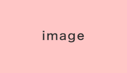
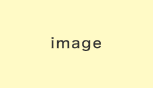
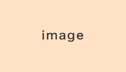

ページの先頭です
共通メニューなどをスキップして本文へ
ホームへ
文字サイズ
文字サイズ変更機能を利用するにはJavaScript（アクティブスクリプト）を有効にしてください。JavaScript（アクティブスクリプト） を無効のまま文字サイズを変更する場合には，ご利用のブラウザの表示メニューから文字サイズを変更してください。文字サイズ変更以外にも，操作性向上の目的でJavaScript（アクティブスクリプト）を用いた機能を提供しています。可能であればJavaScript（アクティブスクリプト）を有効にしてください。
メニュー
閉じる
ここから本文です
現在位置
あしあと
ボタンをクリックすると、関連した手続きが表示されます。
該当する出来事をクリックしてください。

転入
テキストテキストテキストテキストテキストテキストテキスト
転出
転居

結婚

離婚
出生
育児
教育
成人
老後
逝去
随時
テスト
該当する分類を全て選択して、分類から検索ボタンをクリックしてください。
ラジオボタン01
ラジオボタン02
ラジオボタン03
手続き名を入力して、手続き名から検索ボタンをクリックしてください。
手続き名から検索
全ての手続きを閲覧することができます。
手続き検索TOPに戻る